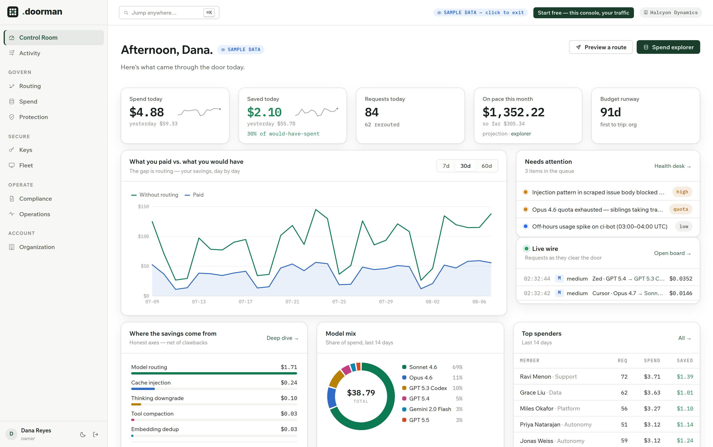
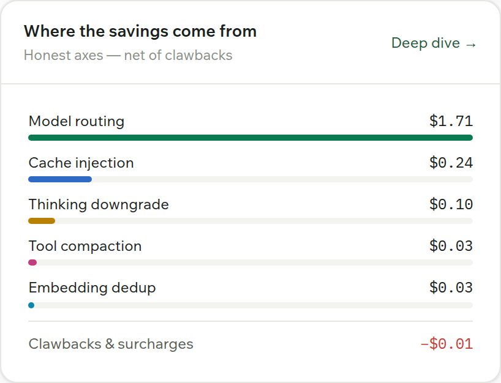
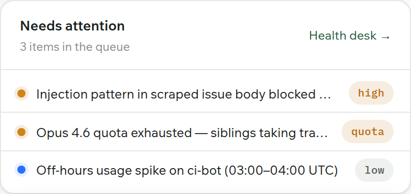
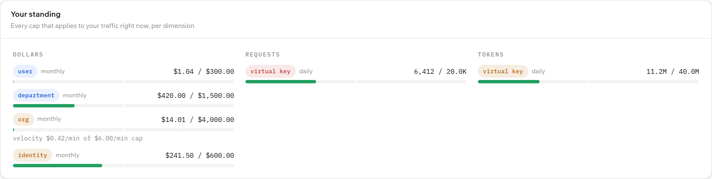

Start free
Open your doors — no card, no sales call. A governed key is minted for you.
Routes every request to the cheapest capable model. Meters every dollar. Claude Code, Cursor, and Codex work unchanged.
New Route a prompt live →Works with Claude Code, Cursor, and Codex — no changes to your tools.

Open your doors — no card, no sales call. A governed key is minted for you.
Point Claude Code, Cursor, or any SDK at the gateway. Your next request is routed and on the ledger.
Shared budgets, per-person savings, one console. Governance scales with every seat.
Interception is env vars, a config file, or the system proxy — never an SDK swap. Cert-pinned apps are visibility-only: usage on the ledger, traffic untouched.



Spend, savings, traffic, and what needs attention.
Open in console →Route preview, model slots, quality, and failover.
Open in console →USD, request, and token limits across every scope.
Open in console →Every laptop and every AI tool, governed.
Open in console →DLP, guardrails, key security, and agent policies.
Open in console →Experiments, model fit, annotation, and quality.
Open in console →Signed evidence, audit logs, residency, and controls.
Open in console →People, departments, integrations, and settings.
Open in console →One controlled gateway for every provider, key, and request.
Provider posture enforced before traffic leaves your boundary.
Unsupported features pass through byte-identical.
Provider keys are write-only and encrypted at rest.
Signed governance artifacts and a hash-chained audit trail.
Endpoint, cloud, customer VPC, or air-gapped.
Routing, dashboard, and savings for a team of one or many.
Start freePer seat / month, plus routed requests. Budgets, DLP, audit, and webhooks.
Start ProSSO, SCIM, ZDR, MDM, customer VPC, and on-prem.
Book a demoexport ANTHROPIC_BASE_URL="https://gateway.yourco.dev/anthropic" export ANTHROPIC_API_KEY="<your governed key>"